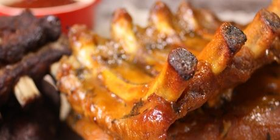

Costillas de res

Costillas de res con salsa de mostaza
Fáciles de preparar y deliciosas costillas de res con salsa de mostaza.
Ideal para comerse con papas guisadas.
Ingredientes
- 1 kg de costillas cortas de res.
- 2 dientes de ajo picados.
- 4 cucharadas de aceite.
- Pimienta martajada al gusto.
- Cáscara rallada de un limón.
- 2 cucharadas de mostaza de Dijon.
- 1 taza de crema ligera.
- 1 cucharada de perejil picado.
- Sal al gusto.
- 3 tazas de verduras mixtas congeladas.
- 6 cucharadas de mantequilla.
Procedimiento
- Limpie las costillas retirando la parte más grasosa.
- Prepara la marinada mezclando el aceite con la pimienta, el ajo
y la ralladura de limón. Acomode las costillas en una charola plana y rocíe
con la marinada. Deje reposar una hora.
- Después escúrra las costillas y cocínelas en una sartén gruesa muy caliente
durante 4 o 5 minutos de cada lado hasta que estén bien doradas. Retírelas y
consérvelas calientes.
- Añada a la sartén la mostaza disuelta en 2 cucharadas de agua, la crema y el
perejil picado, salpimiente y deje cocinar hasta que la salsa espese.
- Cueza las verduras al vapos y báñelas con la mantequilla.
- Acomode las costillas en un plato, ponga las verduras al lado y rocíe con la salsa.